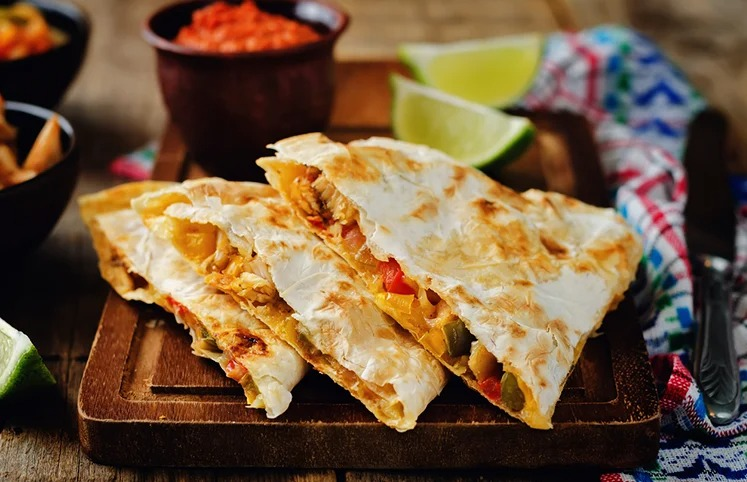
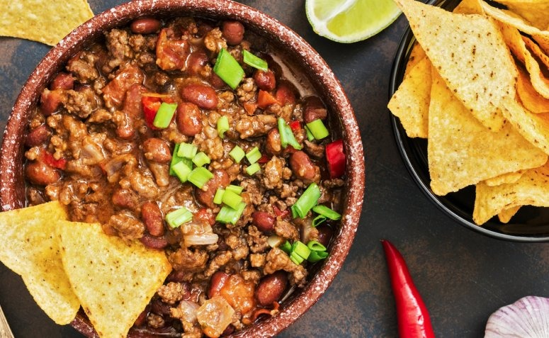
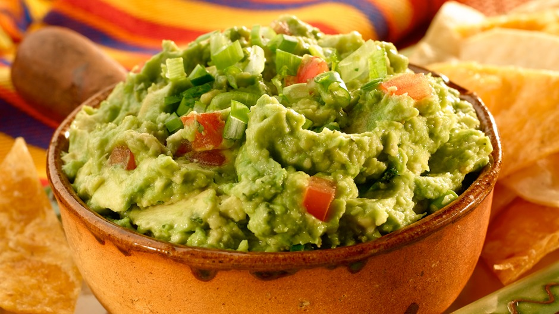
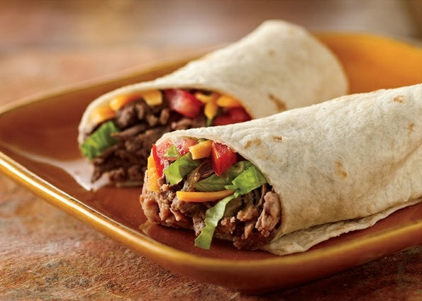
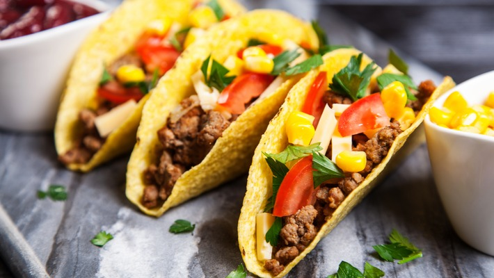

Quesadillas

Ingredientes
- 200 g de filé de frango cortado em cubinhos ou tirinhas
- 2 colheres (sopa) de molho de tomate
- 1 colher (chá) de páprica picante
- 1/2 cebola picadinha
- 1 dente de alho picado
- Bacon e champignons picados
- Salsa e cebolinha picados ou manjericão
- Azeite e sal a gosto
- 100 g de queijo cheddar ralado grosso e 100 g de queijo muçarela ralado grosso
Modo de preparo
- Em uma panela, aqueça o azeite e doure o bacon e a cebola.
- Coloque o frango (já temperado com alho, sal e páprica) e refogue.
- Deixe o frango fritar por alguns minutos, até que fique dourado e acrescente o molho de tomate. Espere cozinhar.
- Coloque o tempero que desejar (salsa e cebolinha ou manjericão), Desligue o fogo e reserve.
- Em uma frigideira antiaderente, espalhe um pouquinho de manteiga ou azeite.
- Coloque um disco (massa semipronta para quesadilla) e deixe dourar, Por cima do disco, coloque os queijos (cheddar e muçarela) ralados grossos e o molho reservado. Deixe o queijo derreter. Feche com outro disco.
- Quando o disco inferior estiver dourado, vire a quesadilla (com a ajuda de uma espátula), para dourar o outro lado. Sirva a seguir, com sour cream, Honey Mustard ou manteiga com ervas.
Nachos com chilli

Ingredientes
- 3 xícaras de feijão carioca cozido
- 500 g de carne moída
- 5 fatias de bacon cortadas
- 1 pimentão picado
- 3 tomates sem semente picados
- 1 cebola picada
- 2 pimentas vermelhas ou 1 dedo-de-moça picadas
- 2 dentes de alho picados e 1 tablete de caldo de carne
Modo de preparo
- Pegue uma panela grande e coloque o bacon para fritar.
- Use o óleo do bacon para refogar a carne moída, junto com o pimentão, a cebola, o cheiro-verde, o alho, o tomate e o caldo de carne diluído em água quente.
- Coloque a pimenta picada e deixe por alguns minutos. Prove para saber se está bom de pimenta, se não coloque a gosto. Coloque os pacotes de molho de tomate e mexa. Depois junte o feijão cozido à mistura. Deixe ferver por alguns minutos. Desligue o fogo e sirva com Doritos.
Guacamole

Ingredientes
- 1 abacate brasileiro médio (ou 4 avocados)
- 1 tomate grande sem sementes
- 1 cebola pequena
- 2 dentes de alho bem socados
- 1 maço de coentro
- 1 pimenta malagueta sem sementes
- suco de 1 limão grande
- Azeite e sal
Modo de preparo
- Amasse o abacate com um garfo, acrescente o alho socado, o suco de limão, sal e azeite a gosto e misture como um purê.
- Pique a cebola, o tomate e o coentro. Pique bem a pimenta.
- Acrescente os ingredientes picados ao "purê" de abacate.
- Sirva com chips, crackers, tacos, no burrito ou mesmo junto com arroz e feijão.
Burrito

Ingredientes
- 1/2 xícara (chá) de farinha de trigo
- 1 xícara (chá) de farinha de milho fina
- 1 colher (sopa) de margarina
- Sal e água
- Carne moída refogada e temperada (a seu gosto)
- Alface cortado em tiras bem finas
- Tomate e cebola bem picadinhos
- Queijo prato cortado em tiras ou ralado
Modo de preparo
- Misture todos os ingredientes até que a massa lembre a de panquecas.
- Então esquente a frigideira e frite as massas, como as de panquecas, porém não muito fina.
- Coloque um pequena porção da carne no centro da massa, distribuindo até as pontas.
- Por cima da carne distribua o alface e por cima do alface o tomate com a cebola, se tiver um molho como guacamole ou sour cream, adicione.
- Por fim, o queijo, feche a massa, colocando as pontas para a lateral oposta.
Taco

Ingredientes
- 400 g de carne de moida
- 1 colher (chá) de óleo
- 2 cebolas médias picadas
- pimenta a gosto
- 4 colheres (sopa) de extrato de tomate
- 2 colheres (sopa) de mostarda
- 2 xícaras (chá) de feijão preto cozido
- 150 g de queijo mussarela
- sal a gosto
- guacamole
Modo de preparo
- Sapeque 1 masas de pastel por vez em uma frigideira antiaderente, até a mesma ficar tostada.
- Doure a cebola e a carne moída, em seguida coloque o extrato de tomate, a mostarda e pimenta, por 10 minutos.
- quando o molho estiver quase seco, despeje o feijão e após o queijo mussarela.
- Deixe cozer até ficar com consistência de pasta, bem grossa. O Chilli deve ficar bem picante.
- Coloque cada item em cumbucas, inclusive o alface, o tomate picado e o quiejo picado.
- Com a massa tostada, coloque uma colher de sopa do chilli, depois o queijo para derreter e o tomate picado, o alface e por ultimo uma colher de sopa rasa de guacamole e feche o taco, como uma tortilha.